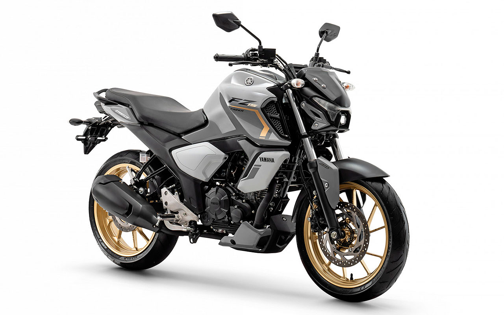

Yamaha FZ15 Vale a Pena em 2026?

Introdução à Yamaha FZ15
A Yamaha FZ15, ou Fazer FZ15 ABS, é uma moto naked de 150cc que ganhou destaque no Brasil em 2026 por sua modernidade e preço acessível. Surge a pergunta: Yamaha FZ15 vale a pena? Sim, para uso diário, ela oferece equilíbrio entre estilo, economia e segurança, com freios ABS de série. Lançada como evolução da Factor 150, a versão 2026 inclui painel digital, LED e design inspirado na FZ25, competindo com Honda CG 160 e Suzuki Haojue DK 150.
Com motor de 149cc, entrega 12,4 cv de potência e torque de 1,3 kgfm, ideal para tráfego em cidades pequenas, com acelerações suaves e estabilidade em curvas.
Preço da Yamaha FZ15 em 2026
O preço sugerido da Yamaha FZ15 2026 é R$ 15.990 (sem frete), podendo chegar a R$ 16.500 com impostos. Concessionárias oferecem financiamentos com entrada de R$ 3.000 e parcelas acessíveis, tornando-a viável para jovens ou trabalhadores. Comparada a usadas (R$ 12.000-14.000), a nova vale pela garantia de 4 anos e atualizações como conectividade via app. Para quem busca entrada premium, Yamaha FZ15 vale a pena 2026 como upgrade de modelos básicos, com depreciação baixa (~9% anual) graças à reputação da Yamaha.
Promoções locais podem reduzir o valor em 5-10%, especialmente em feiras de motos.
Consumo e Desempenho no Uso Diário
O consumo médio é de 40-45 km/l na cidade, alcançando 50 km/l em estradas, graças à injeção eletrônica e transmissão de 5 marchas. Isso faz Yamaha FZ15 vale a pena para economia, com tanque de 12 litros permitindo ~500 km de autonomia. Velocidade máxima ~105 km/h, com maneabilidade excelente para evasivas em tráfego urbano. O conforto destaca: posição ereta, banco ergonômico e suspensão que absorve irregularidades em vias pavimentadas ou de terra leve.
Para trajetos mistos (urbano/rural), ela supera concorrentes em eficiência, mas pode vibrar em velocidades acima de 80 km/h.
Manutenção e Custos Anuais
A manutenção é econômica: revisões a cada 4.000 km custam R$ 150-250 em autorizadas. Custos anuais (peças, óleo, pneus) ficam entre R$ 700-1.000 para 10.000 km. Peças como filtro de ar (R$ 40) e pastilhas ABS (R$ 120) são baratas, com rede ampla. Oficinas independentes baixam isso em 20%. Com poucos relatos de falhas, a durabilidade chega a 80.000 km sem grandes reparos, confirmando que Yamaha FZ15 vale a pena 2026 para quem prioriza baixo custo de propriedade.
- Prós: ABS, design moderno, economia, rede de peças.
- Contras: Potência modesta para viagens longas, sem USB de série.
Comparação com Concorrentes em 2026
Vs. Honda CG 160 (R$ 13.500): A FZ15 vence em segurança (ABS) e estilo. Vs. Bajaj Pulsar NS 160 (R$ 14.000): A Yamaha é mais eficiente e com melhor revenda. Para rotas curtas, a FZ15 se adapta bem a necessidades diárias. Considere um test drive para avaliar o fit pessoal.
Conclusão: Yamaha FZ15 Vale a Pena?
Sim, a Yamaha FZ15 vale a pena em 2026 para uso urbano acessível, com bom equilíbrio de preço, desempenho e segurança. Perfeita para cidades onde praticidade importa. Verifique concessionárias para ofertas e dados atualizados. (Baseado em análises 2026; valores aproximados.)
Outras Notícias
Honda Bros 160 aguenta viagem?
Vale a pena comprar a Bajaj Dominar 250?